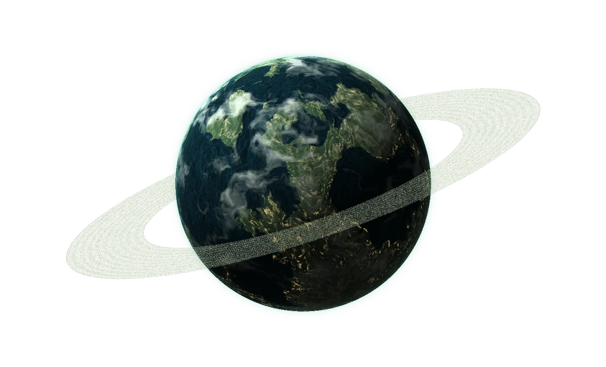

INTERACTIVE PLANETARY ATLAS
The Utopian
Era.
Three distant worlds. One possible future.
Explore the places humanity calls home.
AURELIA

Three distant worlds. One possible future.
Explore the places humanity calls home.